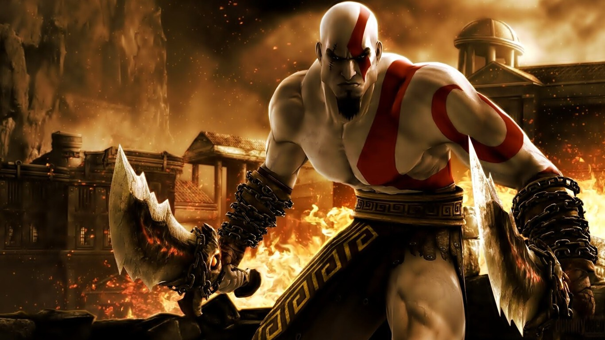

En conclusión, la mitología griega funciona como un puente eterno entre lo divino y lo terrenal, utilizando a dioses con defectos humanos y héroes enfrentados al destino para explicar tanto los fenómenos naturales como los dilemas morales de la existencia. Su legado no se limita a templos en ruinas, sino que sobrevive en nuestra psicología, nuestro lenguaje y nuestras artes, recordándonos que las pasiones, miedos y aspiraciones que definieron a la antigua Grecia siguen siendo la esencia de la experiencia humana hoy en día.
